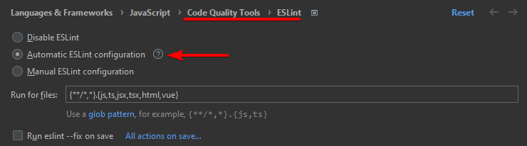
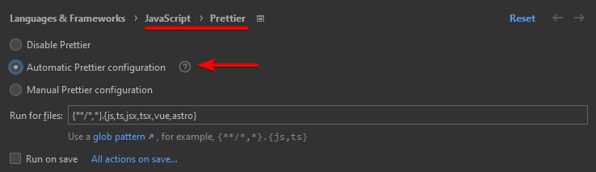
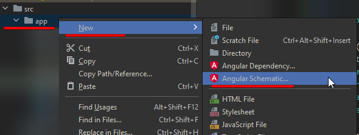

Follow the quickstart guide and then answer the CLI questions.
cd sandbox
npm init @angular angular-XX
cd angular-XX
npm serve
Add eslint with ng lint (this will recommend the schematic ng add @angular-eslint/schematics).
It may complain about the ts version, which may or may not be a problem:
"WARNING: You are currently running a version of TypeScript which is not officially supported by @typesc
ript-eslint/typescript-estree."
Add a var x = 1; to a file, run the linter and see if it catches the problem; it should.
Don't forget to enable eslint in WebStorm:

Install with npm i -D prettier and create config with echo {}> .prettierrc.json.
.prettierrc.json ❓
{
"printWidth": 100,
"singleQuote": true,
"quoteProps": "preserve"
}
.prettierignore ❓
build
coverage
e2e
package-lock.json
Don't forget to enable prettier in WebStorm:

Install Sindre's modern normalize: npm i -S modern-normalize,
then import it in the global styles.scss (under src): @import "modern-normalize";.
💣 Modifying (manually) such an external (s)css file will not trigger a proper rebuild.
Create file (from predefined templates, aka. schematics): ng generate / ng g
but this must be run in src/app, otherwise it will return the following error:
"Could not find an NgModule. Use the '--skip-import' option to skip importing in NgModule."
Create a new component (generate component):
cd src/app
ng g c pages/AnotherPage
